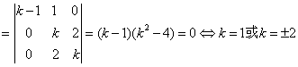
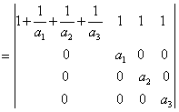
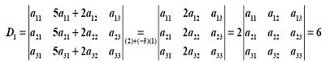

1.3 行列式的性质与计算
一、行列式的性质
|
首先介绍转置行列式的概念。
例如， 性质1表明：在行列式中，行与列的地位是平等的或对称的，因而行列式有关于行的性质，对列也同样成立。 性质 2 ：用数 k 乘行列式 D 中某一行（或某一列）所得的行列式等于行列式 D 的 k 倍，换句话说，对行列式，可以按行（列）提出公因数。 例如 |
| 例 1：计算行列式 解：D中第二行元素有公因数2，第三行元素有公因数3，都可提出来，即 |
|
性质 3： 互换行列式的任意两行（或两列），行列式的值变号 例如 推论 1 ：若行列式中有某两行（列）相同，则此行列式为零。 推论 2 ：若行列式中有某两行（列）元素对应成比例，则此行列式为零。 例如 这是因为第一行元素与第三行元素对应成比例。 性质 4 ：若行列式的某一行（或某一列）的每一元素均表为两个数的和，则行列式可以按该行（列）拆成两个行列式相加。 例如 注意：在拆成两个行列式相加时，应逐行或逐列拆，即， 应该为 性质 5 ：把行列式 D 的某一行（列）的 k 倍加到另一行（列）上，行列式的值不变。 例如 
|
|
例 2：已知104，273，351均能被13整除， 证明：行列式也能被13整除 证：把D的第一列的100倍，第二列的10倍均加到第三列上，得 ，而的值必是整数。 所以D的值为13的整数倍，即D能被13整除。证毕。 |
|
例 3：证明的充要条件是 证：  证毕。 |
|
由以上行列式性质与展开定理，可得
|
二、行列式的计算
|
行列式的计算主要有以下两种基本方法 （ 1 ）利用行列式性质，把原行列式化为上（下）三角行列式求值。 （ 2 ）利用性质，先把行列式中某一行（或某一列）的元素尽可能多的化为零，然后再按该行或列展开，把阶数逐步降下来。 |
|
例 4：计算行列式 解：方法一，化为上三角行列式 由于D中第4列已有两个元素为零，利用性质5，再把一个元素化为零。 |
|
例5：计算n阶行列式 解 方法一 这个行列式的特点是每行元素的和均为，（称它为行和相同行列式），可采用以下方法求其值，先把后n-1个列都加到第1列上，提出第1列的公因数 方法二考虑到D中每一行上有很多元素为b，采用“加边法”，即造一个与D相等的n+1阶行列式。 当时，显然，不妨设 |
|
例6：计算行列式 
解：方法一，直接按第一列展开 方法二 降阶法 
方法三 加边法  |
请认真答题，测试一下你对前面知识点的学习情况！
(单选题) 1．设行列式 则 D1的值为（ ）
【答案】C
【解析】
【知识点】行列式的性质
请认真答题，测试一下你对前面知识点的学习情况！
(单选题) 2．计算行列式=（ ）
【答案】C
【解析】：
【知识点】行列式的计算